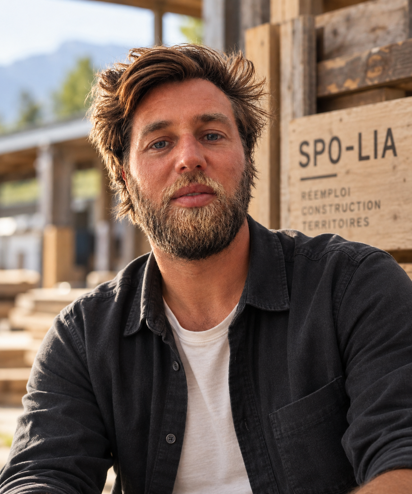

SPO-LIA est né d’une conviction simple : avant de produire du neuf, regardons ce que nous avons déjà.
Économiste de la construction, j’ai progressivement orienté mon parcours vers l’économie circulaire, le réemploi, la transformation du bois et l’économie sociale et solidaire.
Mon expérience m’a conduit du suivi économique des projets de construction au développement et à la coordination de plusieurs ateliers de menuiserie spécialisés dans le bois de réemploi.
J’y ai travaillé sur toute la chaîne de valeur : identification des ressources, collecte, caractérisation, sciage, transformation, conception et fabrication, mais également sur la coordination des équipes et la formation des encadrants techniques, coordinateurs et opérateurs.
Cette expérience de terrain m’a permis de confronter le réemploi à sa réalité : un matériau existant possède ses contraintes, ses dimensions, ses traces et son histoire. Le projet doit apprendre à composer avec elles plutôt qu’à les effacer.
De l’ingénierie à la création
Avec SPO-LIA, je souhaite réunir deux univers trop souvent séparés : l’ingénierie du réemploi et la création.
Diagnostic PEMD, AMO et accompagnement des maîtres d’ouvrage permettent d’identifier les ressources et d’organiser leur seconde vie. La conception, le sciage, la transformation et la fabrication permettent ensuite de leur donner un nouvel usage.
Mobilier, aménagements, architecture bois, installations ou scénographies deviennent ainsi autant de possibilités de faire avec l’existant.
Une approche locale et collaborative
Implanté à Aix-les-Bains, en Savoie, SPO-LIA intervient auprès des collectivités, architectes, entreprises, associations et acteurs de l’économie circulaire.
Chaque projet cherche à associer réemploi, ressources locales, savoir-faire, utilité et qualité architecturale, avec une attention particulière portée à la transmission et à la dimension sociale des projets.
La matière existe déjà.
À nous d’imaginer sa prochaine vie.
Vous avez un projet de réemploi, de transformation ou d’aménagement en bois ?